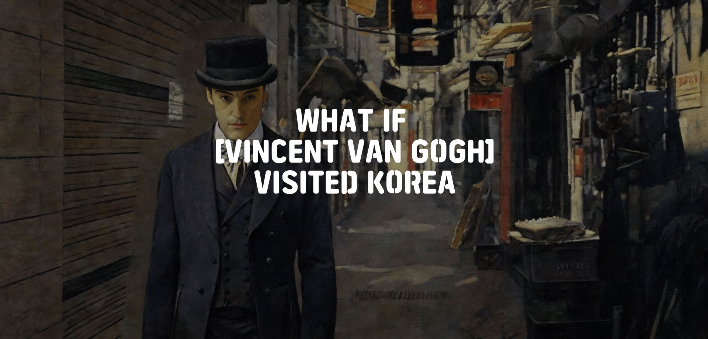
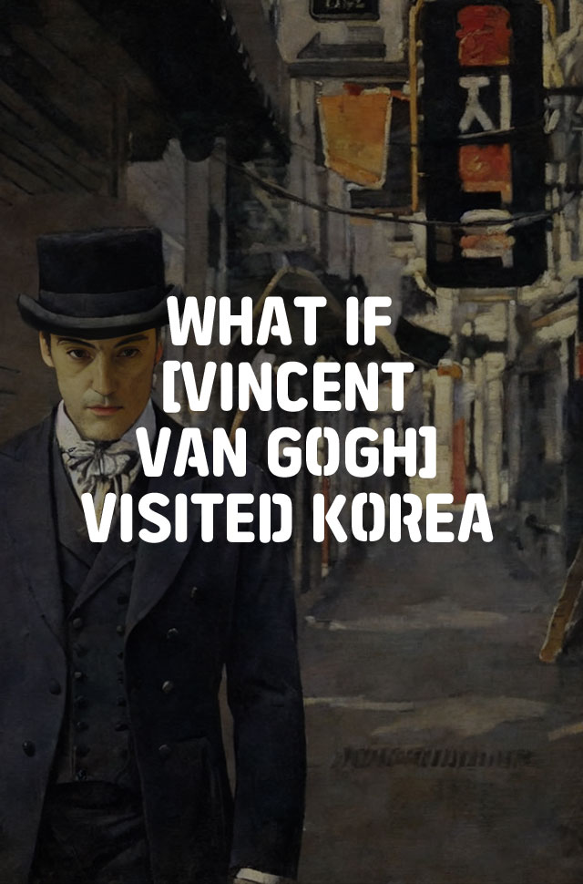

What if Van Gogh, What if Monet, What if Klimt
visited Korea?
Can you imagine the masterpieces
they would have created?
Meet a new side of Korea through
AI-created artwork
in the styles
of these famous artists.